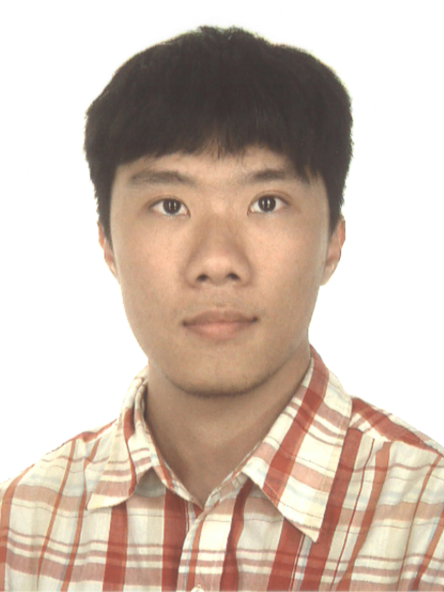

|
 |
Shih-Hao TsengPh.D. Student
Email: st688 at cornell dot edu Phone: 607-280-7864 |
I received my B.S. degree in Electrical Engineering (minor in Economics) from National Taiwan University in 2012. I joined the Ph.D. program at Cornell as a Jacobs Fellow in Fall 2013. I am a member of the Networks Group led by Dr. Kevin Tang. My research interestes include network optimization and algorithms. For those of you who would like to know more about me, here's a copy of my CV.